Graphics Write-up
==================
Name: Mary Yen
JHED ID: myen3
Class: 357
Environment:
Distributor ID: Ubuntu
Description: Ubuntu 14.04.1 LTS
Release: 14.04
Codename: trusty
Number of late days used: None
-----------
Notes
-----------
The image.h file was modified to add the additional helper methods that the image.todo.cpp contains.
----------
noisify
----------
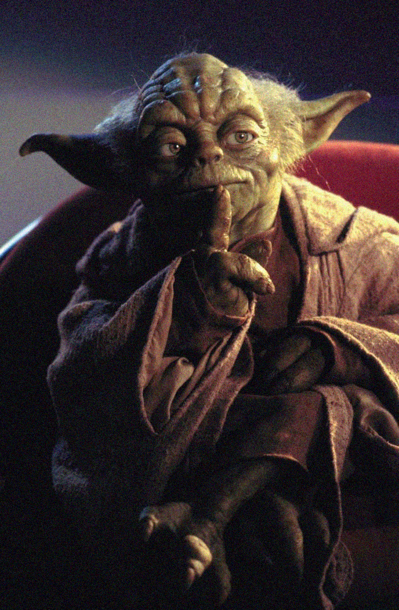 noisfy .1
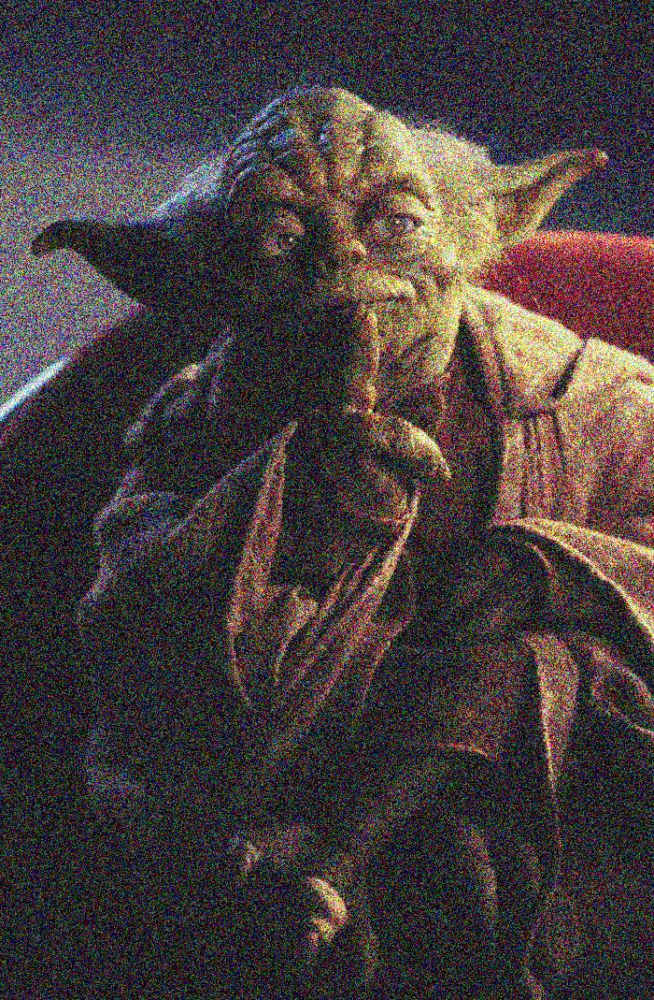 noisfy .5
I interpretted the 0 to 1 scale as how far away from the input image's original color you were allowed to get, with 0 to 1 correlating to 0 to 255. (i.e. for input .5, we can vary from the input value up to a value of 128; for 1, we can vary up to 255) I called this variance value the "range."
Note that the values may vary from a value of input + or - the range. To create this range of variance, I subtracted the range from the input value and allowed the addition to the input value (rNum) to vary up to range * 2, which gives us the following format for each rgb channel:
outputImage.pixel(x,y).r = rgbTruncate((pin.r - range) + rNum);
Furthermore, I allowed each rgb channel to vary independently to create a rgb variance rather than a simple value variance.
---------------------------
For brighten, contrast, and saturation, I used the following equation (given by the assignment) to interpolate or extrapolate (if alpha > 1) to get the desired effect:
out = (1 - alpha)*in0 + alpha*in1
in0 = the source image's pixel value
alpha = the given factor (and therefore determining the intensity of the effect)
in1 = the degenerate image that we interpolate or extrapolate towards
---------
brighten
---------
 brighten .5
brighten .5
 brighten 2
brighten 2
The degenerate image is a image of black pixels. Interpolating towards it will darken the image while extrapolating from it brightens the image.
----------
luminance
----------

I found the value (HSV value) for each pixel by multiplying each rgb channel by its corresponding luminance factor (LUMA_FACTOR) and adding the values together. I set the rgb channels all to this sum to produce the black and white image.
---------
contrast
---------
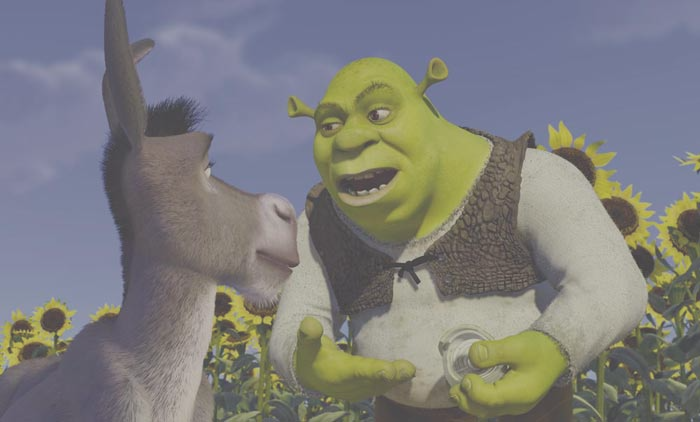 contrast .5
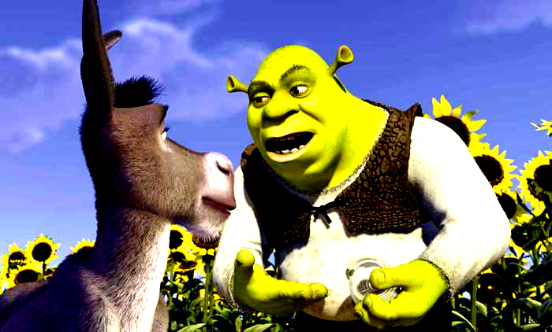 contrast 2
The degenerate image is an entirely neutral gray (rgb channel is 128,128,128). Extrapolating away will make the image contrast more intensely while the interpolating makes the image less contrasted.
--------
saturate
--------
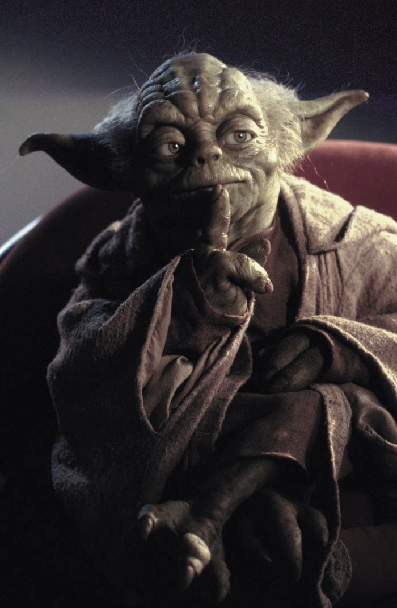 saturate .5
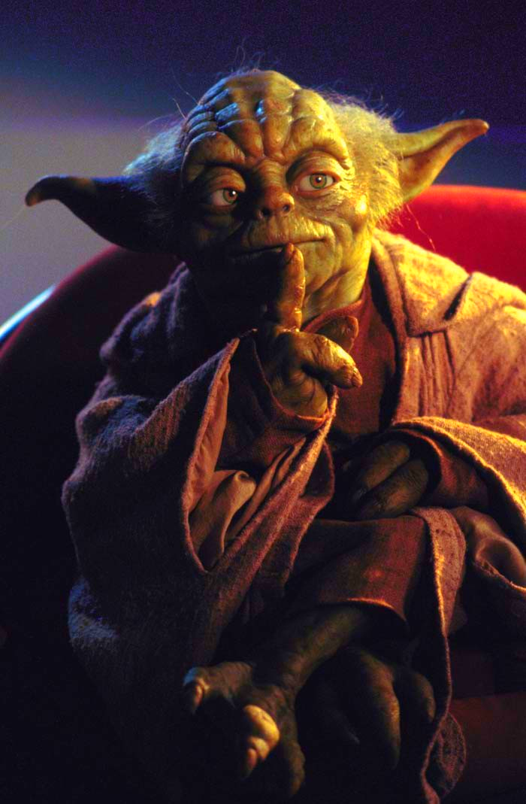 saturate 2
The degenerate image is a black and white image, which was the suggested image for saturation extra/inter-polation from the given website.
------------
quantization
------------
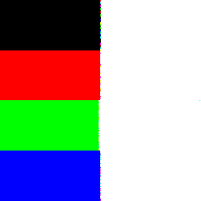 quantize 1
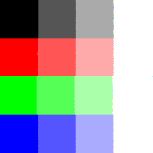 quantize 2
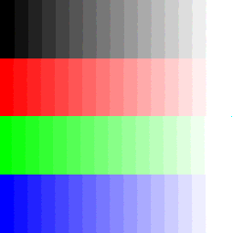 quantize 4
For every bit, we will allow the rgb channel to have 2^bit values. (e.g. for 1 bit, we allow rgb values 0 or 255; 2 bits: 0, 85, 170, 255, etc) We will quantize all values to these given values.
variables
---------
-qBits: number of values that the given number of bits allow to quantize to.
I quantize to values depending on what range the rgb value was in, as demonstrated in the following figure for a 2bit input.
-rangeBit: 255/qBits. The range of values that we will quantize to the same value. For instance, in the 2 bit example, we will have a range size of 255/4 = 63. In the diagram below, this range is represented by 'a.' All values in range 'a' will be quantized to zero, ranges of 'b' (63 to 127) quantizes to 85, and so on. The values of these ranges are stored in the qRanges array (note that qRanges only stores from 63 (index 1) and on for ease of coding).
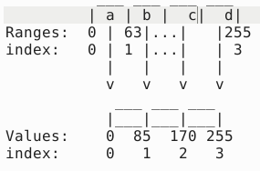
-valueBit: 255/(qBits-1) since we want to allow the value to equal 0 and 255. qValues stores the values we will quantize the rgb values to.
We will go through the picture and divide the rgb value by the rangeBit and multiply by the valueBit to quantize.
----------------
Random Dithering
----------------
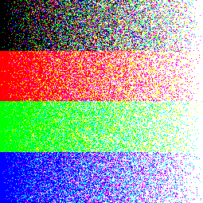 rDither 1
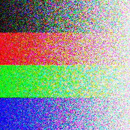 rDither 2
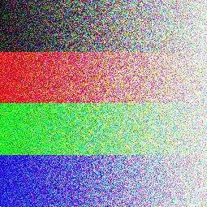 rDither 4
The method is essentially a combination of my AddRandomNoise and Quantize method (first adding the noise before quantizing).
------------------
OrderedDither2X2
------------------
This method is left incomplete.
----------------------
FloydSteinbergDither
----------------------
This method is left incomplete.
--------
Blur3X3
--------
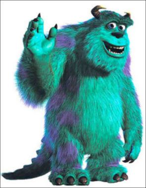
I used the suggested 3x3 mask given in lecture notes wherein
.25 of the weight comes from the center pixel, .0625 come from the 4 corners of the mask (the cross), .125 come from the pixels the rest (the plus). I'll iterate through the image, applying the mask as needed to blur.
For the borders, I redistribute the mask values as necessary depending on the edge of the mask that's missing. I switch in the redistributed mask as needed (the code labels the masks by which edge is missing, eg maskL is missing the left-most column while maskBL is missing the bottom row and left column (B = bottom, R = right, L = left, T = top).
-------------
EdgeDetect3X3
-------------
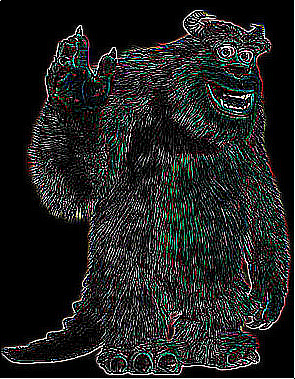
Edge detect works similarly to blurring in terms of using the mask on the entire image and switching masks to redistribute the weights as needed for the borders. The mask values were taken from the provided lecture slides.
------------
Scaling
------------
Takes the scalefactor and changes the outputImage size as necessary before applying the inverse scaling factor to each pixel point from the outputOmage to reverse map to the source image for nearest sampling. Nearest, Bilinear and Gaussian scaling work similarly but with the appropriate sampling. Gaussian sampling requires that the radius be 1/scaleFactor for a reasonable image. The variance of .1 was chosen since the value of the image is closer to the original when the variance is closer to zero.
-------------
scaleNearest
-------------
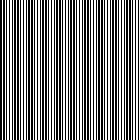 scaleNearest .7
 scaleNearest 1
scaleNearest 1
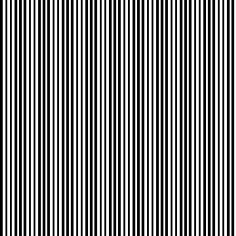 scaleNearest 1.3
-------------
scaleBilinear
-------------
scaleBilinear .7
scaleBilinear 1
scaleBilinear 1.3
-------------
scaleGaussian
-------------
scaleGaussian .7
scaleGaussian 1
scaleGaussian 1.3
----------
Rotation
----------
The rotated image's size is calculated by the following:
int outWidth = abs(height*sin(angle*PI/180)) + abs(width*cos(angle*PI/180)); //accounting for extra space needed for rotated image
int outHeight = abs(height*cos(angle*PI/180)) + abs(width*sin(angle*PI/180))
;
Which are essentially the trig operations required to find the extra height and width of the rotated image.
The equation for rotation:
u = (x-dcx)*cos(angle*PI/180) - (y-dcy)*sin(angle*PI/180) +ocx;
v = (x-dcx)*sin(angle*PI/180) + (y-dcy)*cos(angle*PI/180)+ocy;
was generally taken from class, but I had the coordinates first be translated by dcx, dcy (the origin of the rotated image) and then translated by ocx, ocy (the origin of the original image) to center the rotated image.
The radius was arbitrarily taken as "2" for the rotateGaussian.
-------------
rotateNearest 30
-------------

-------------
rotateBilinear 30
-------------
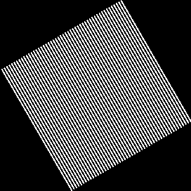
-------------
rotateGaussian 30
-------------
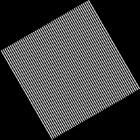
---------------------
Composite & SetAlpha
---------------------
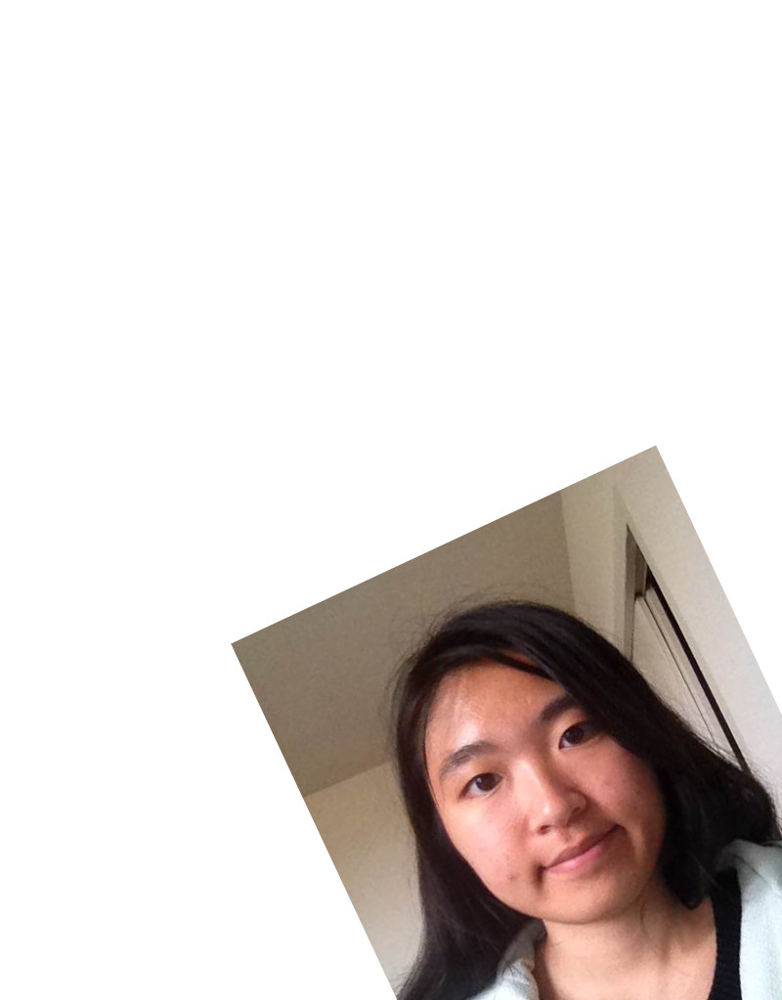 Source image
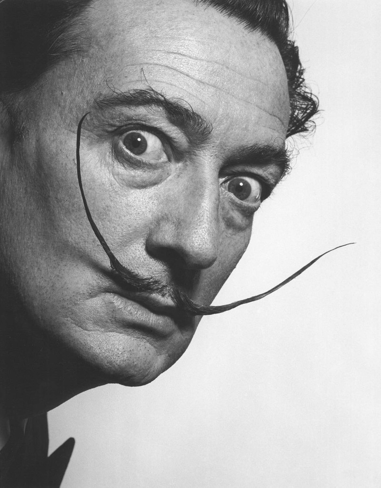 Overlay image
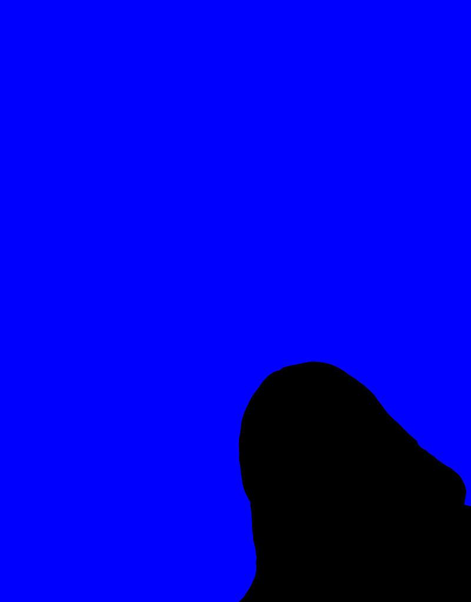 Matte image
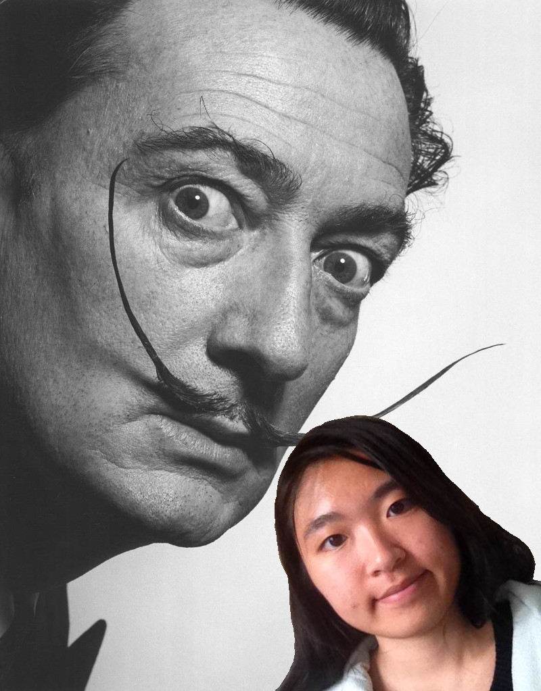 My composite image with a famous person (Salvador Dali)
First, SetAlpha will map the overlay image's alpha to transparent if the matte image's rgb blue value isn't 255, and map it as opaque if the matte's rgb blue value is 255. SetAlpha will first check the matte image for pixels that have rgb blue values that are less than 255. Originally, I had it checking for rgb blue values equal to zero, but it turns out that image rgb values vary from 0 to 255 even if the image looks like it's only 0 or 255. As a result, I had the SetAlpha check for values under MAX_RGB/ALPHA_COMPOSITE_FACTOR (255/8), and the image gives a clear overlay as a result.
Composite will then take the overlay's pixel if the overlay's alpha value is greater than 0, but it'll take the source image's pixel otherwise to make the composite image.
----------
FunFilter
----------
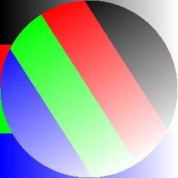
This filter is a modification of the rotation equation given in class. A radius of rotation is calculated depending on the width of the image while the rest of the image is unrotated. Again, the ocx and ocy are calculated to translate the image into the center.
-----
Crop
-----
 Original image
Original image
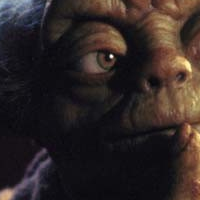 Cropped at x=200, y=200 for the top left corner and x=400,y=400 for bottom right.
The method first checks if the input coordinates are within the original image. Then it sets the outputImage's dimensions to be that of the input coordinates. Lastly, it finds the ox,oy (which are the coordinates that the original image's pixels must be mapped to since the outputImage will have different dimensions and therefore a diferent coordinate system) to map the pixels.
-------------
NearestSample
-------------
This method checks if the x,y coordinates are out of bounds before rounding the float coordinates down to the nearest pixel size.
--------------
BilinearSample
--------------
This method utilizes the equation given in class for bilinear sample (wherein we take the weighted average of a pixel's values depending on its immediate neighbors in a 2x2 pixel area). The method uses takes the weighted average of each rgb channel to sample.
---------------
GaussianSample
---------------
This equation finds the square within the given radius to act as the area of sampling. Within this square, the gaussian weights are calculated according to the equation given in class (and according to the point's distance from the given pixel).